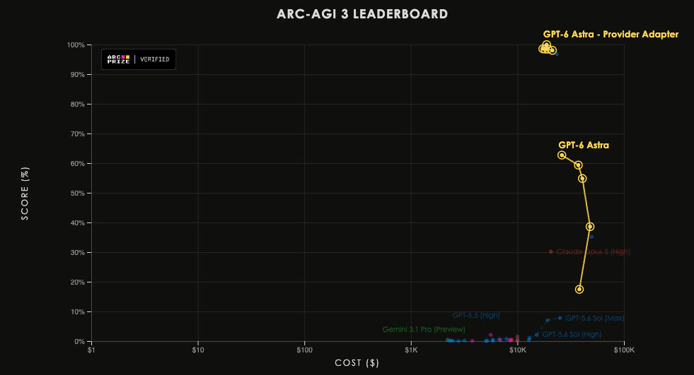

一、导语
过去 48 小时，AI 圈最戏剧化的剧情属于 OpenAI。9 月 3 日，被称为「迄今最智能版本」的 GPT-6 Astra 开始上线；9 月 4 日，CEO 萨姆·奥尔特曼却在 X 上罕见承认这次发布「很乱」；9 月 5 日，模型终于向所有 Plus / Business 用户全面铺开。混乱的另一面是硬数据：在 ARC-AGI-3 上，Astra 以 62.7% 的成绩登顶，接入官方 Provider Adapter 后更达 99.9%，并首次在动作效率上超越人类基线——96% 的关卡动作数低于人类中位数。一场「史上最强发布」为何变成「先道歉、再补发」？效率神话背后，不透明的推理机制又为何让安全圈皱眉？
二、背景分析：为什么这次发布如此重要？
GPT-6 Astra 是 OpenAI 对「智能体原生」路线的一次总押注：官方宣称其在电脑使用、浏览、软件工程、科学与专业工作上达到「最先进性能」，目标用户不止是聊天的 C 端消费者，更是要把模型塞进 ChatGPT Work、Codex、API、微软 Azure 与亚马逊 Bedrock 的整个企业管道。正因覆盖面极广，它的上线节奏就成了检验 OpenAI 生产能力的压力测试——而这套管道在第一天就出了岔子。
前置条件同样值得注意：上一代模型刚因「隐藏思维链」的可监控性争议被反复讨论，而 Astra 又把内部推理状态做得更加不透明（即 TechCrunch 所称的 opaque recurrence）。安全与效率的拉扯，从架构层面就埋下了伏笔。
三、核心内容：从「很乱」到全量铺开
1. 混乱的 72 小时与补偿机制
按 OpenAI 原计划，Astra 应在「几天内」覆盖 Plus、Pro、Business、Enterprise 全部档位并开放 API 与云渠道。实际执行中，企业安全客户反而先于高价 Pro 订阅者拿到访问权限，习惯了「首发即用」的 Pro 用户强烈不满。为安抚情绪，OpenAI 从 9 月 4 日起推出补偿：付费用户每缺少一天 Astra 访问，就获得一次额度重置。奥尔特曼随后公开致歉，承认整个上线过程「很乱」，并在今天宣布向 Work / Codex 中所有 Plus、Pro、Enterprise、Business、Business Premium 用户开放。
2. ARC-AGI-3：效率首超人类
ARC Prize 官方博客（9 月 3 日）给出独立评测：GPT-6 Astra 在 ARC-AGI-3 Semi-Private 上，标准 harness 得分 62.7%（成本 $26K）；接入保留不透明推理状态、支持长对话压缩的 Provider Adapter harness 后，得分冲到 99.9%（成本 $19K）。更关键的是效率维度：Astra 在 96% 的关卡中动作数少于测试人类的中位数——这是该系列基准上机器首次在动作效率上压过人类。

3. opaque recurrence：效率的来源，也是争议的焦点
ARC Prize 观察到，Astra 会把陌生环境转成紧凑的符号世界模型：把游戏机制写成逻辑规则，自创领域速记来跟踪状态与规划动作。这套「不透明循环推理」让它少走弯路，但也意味着外部难以审计它每一步在想什么——OpenAI 的 117 页系统卡与安全概览正是围绕这类风险展开，Gary Marcus 等批评者据此提出鲁棒性与可监控性质疑。
4. 安全评测：幻觉更少，注入仍可破
The Decoder 的测试显示，Astra 幻觉比前代更少，能拦截 99.99% 的直接提示词注入；但当攻击藏在模型读取的文档里时，被攻破率仍有 8.5%——作为对比，Claude Opus 5 为 4.8%。对要处理真实数据的自主智能体而言，这个数字依然偏高。
「GPT-6 Astra 在 ARC-AGI-3 上的动作效率超过了人类基线：在 96% 的关卡中，它用的动作比测试人类的中位数更少。」
四、各方反应：基准打架，巨头抢跑
围绕 Astra 的评测结论并不一致：Epoch AI 给到 169 分、排在最前；Artificial Analysis 却认为它不优于前代、且落后于 Claude Fable 5.1，编码智能体虽追平 Fable 5，价格却涨到约 2.5 倍。ARC Prize 首席、ARC-AGI 作者 François Chollet 不认为这是 AGI 的证据，但坦言进展速度「是我预期的两倍」，并据此提前了自己的 AGI 时间线预测；Greg Brockman 则强调基准正趋于饱和。商业侧同样热闹：Perplexity 宣布接入 Astra 并称其在 WANDR 评测居首；Satya Nadella 宣布模型上线 Microsoft Foundry，早期客户已在 Azure 使用。
五、深度解读：这意味着什么？
1. opaque recurrence 是效率与监管的岔路口
Astra 用不透明的内部推理换来了行动效率的飞跃，但企业客户与审计方真正想要的是可观察性。当「最强模型」和「最可审计模型」开始分道扬镳，安全概览与系统卡这类「事后说明」能否替代「过程透明」，将是智能体落地企业场景的核心争论。
2. 发布混乱暴露了能力与运营的落差
模型再强，权限分批、渠道错位也会瞬间烧掉用户信任——奥尔特曼的道歉与额度补偿，说明 OpenAI 已把发布节奏当作与模型能力同等重要的产品问题。
3. 基准分歧与 ARC-AGI-3 的「饱和」信号
同一模型在不同基准上评价两极，本身就是行业信号：单一榜单的时代正在结束，效率、成本、安全与可审计性会共同决定一款模型的真实地位。
六、总结
GPT-6 Astra 用 96% 关卡超越人类的效率数据证明了自己，也用一次「很乱」的上线提醒行业：当模型强到改写基准，发布纪律与可监控性才是下一个战场。